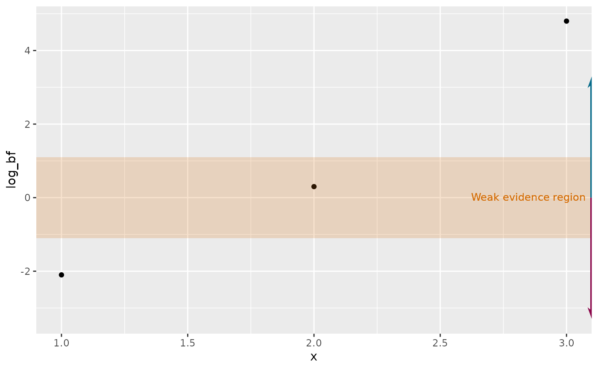

Weak-evidence region + directional arrows for a log-BF axis
Source:R/theme-bayes-bf-forest.R
layer_bf_evidence_scale.RdA shaded "weak evidence" region + optional directional arrows/labels +
optional secondary linear-BF axis, for any plot with a log Bayes Factor
valued axis. Composable (a list of layers/annotations), not a full
plot-builder - add it to a ggplot you build yourself, the way
layer_halfeye_hdi() works.
Usage
layer_bf_evidence_scale(
orientation = c("x", "y"),
weak_threshold = log(3),
weak_label = "Weak evidence region",
weak_fill = NULL,
weak_color = NULL,
direction_labels = NULL,
direction_colors = NULL,
range = NULL,
secondary_axis = FALSE,
secondary_breaks = c(1, 2, 5, 15, 50, 150),
secondary_name = "Bayes factor (BF)"
)Arguments
- orientation
"x"(log-BF on the x-axis, e.g. a forest plot) or"y"(log-BF on the y-axis, e.g. a continuous-x sensitivity sweep).- weak_threshold
Half-width of the shaded band, in log-BF units. Default
log(3), the Jeffreys/Lee "weak/anecdotal evidence" conventionthe same convention
bayestestR::bayesfactor_rope()'s BFs are on.
- weak_label
Text for the shaded band (
NULLomits it). Anchored viaInf+ hjust/vjust to the relevant panel edge rather than a data-dependent position.- weak_fill, weak_color
Fill/text color for the shaded band and its label; default to
mt_colors5[3].- direction_labels
c(positive, negative)- text naming what a positive/negative log-BF supports (e.g.c("supports a real difference", "supports practical equivalence")for a ROPE comparison).NULL(default) omits the arrows and labels entirely.- direction_colors
Length-2 colors for the positive/negative arrows/labels; defaults to
mt_colors[1:2].- range
c(min, max)the arrows should span along the BF axis. Only used whendirection_labelsis given;NULLfalls back to a genericc(-1, 1) * weak_threshold * 3.- secondary_axis
FALSE(default) orTRUEto add a linear-BF secondary axis viasec.axis = dup_axis(...)atsecondary_breaks.- secondary_breaks
Breaks for the secondary linear-BF axis.
- secondary_name
Axis title for the secondary linear-BF axis.
Details
Both the arrows and their direction labels are Inf-anchored to the same
panel edge weak_label uses (top, for orientation = "x"; right, for
"y"), with the labels sitting right at each arrow's tip via
vjust/hjust nudges. Inf-anchoring costs no reserved space at all - no
scale expansion or coord_cartesian(clip = "off") is needed beyond what
weak_label already didn't need.
Examples
library(ggplot2)
df <- data.frame(x = 1:3, log_bf = c(-2.1, 0.3, 4.8))
ggplot(df, aes(x, log_bf)) +
geom_point() +
layer_bf_evidence_scale(
orientation = "y",
direction_labels = c("supports difference", "supports equivalence")
)
